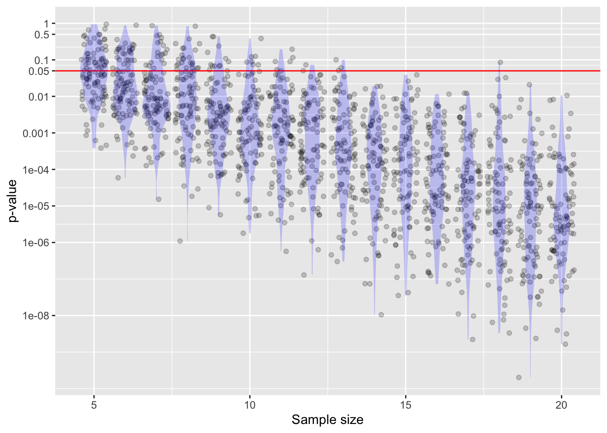
y ~ x using data from dag01. As the sample size becomes larger, the p-value becomes very small. There is also a lot of sampling variation.Math300Z
Daniel Kaplan
March 8, 2023
A p-value doesn’t replace careful choice of covariates and causal analysis (e.g. with DAGs).
The sampling distribution on p-values has a long tail.
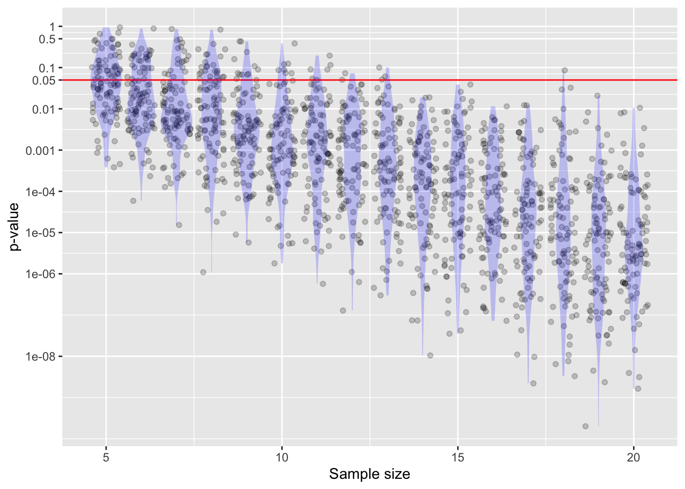
y ~ x using data from dag01. As the sample size becomes larger, the p-value becomes very small. There is also a lot of sampling variation.The Null is convenient, not important. It’s easy to do calculations under the Null (e.g., shuffling). The Null is merely part of a screening test aimed to weed out claims not even vaguely supported by the evidence.
A non-zero effect size can nonetheless be trivial, uninteresting, and useless. Even a trivial effect size can dramatically increase the chances that p will be less than 0.05.
0.05 is only relevant when the analysis has been pre-planned before the data were collected. (This avoids changing the analysis in order to get a better p-value.) Testing multiple hypotheses substantially increases the odds of finding p < 0.05 in one of them.
No. The p-value is a likelihood p(obs | Null), not p(Null | obs).
But this misbelief is more pernicious than just a simple confusion about conditional hypotheses. Remember Fisher’s comment (1926):
“Personally, the writer prefers to set a low standard of significance at the 5 per cent. point, and ignore entirely all results which fail to reach this level. A scientific fact should be regarded as experimentally established only if a properly designed experiment rarely fails to give this level of significance.”
Fisher was talking about conducting many replications of an “experiment.” The “p is the prob. that the Null is true” seems to translate into “my small p means that if I did replicate the work, I would be very unlikely to get a large p-value.”
The Alternative plays a role in proper study design, and is a good reference point for interpreting the confidence intervals found from the data. But, despite the claims in introductory textbooks, p-value has no relationship to the alternative.
[For instructors …] Using a one-tailed test does divide the p-value by 2 compared to a two-tailed test. But using one tail only provides too much room for abuse and ought to be regarded with skepticism.
There is no loss-function in the hypothesis-testing framework so it’s not suited for decision-making. Contributing to this lack of suitability is the lack of posterior probabilities inherent in hypothesis testing.
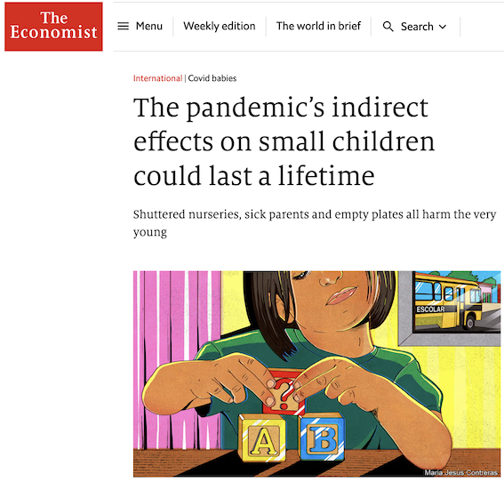
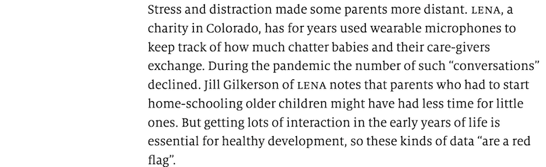
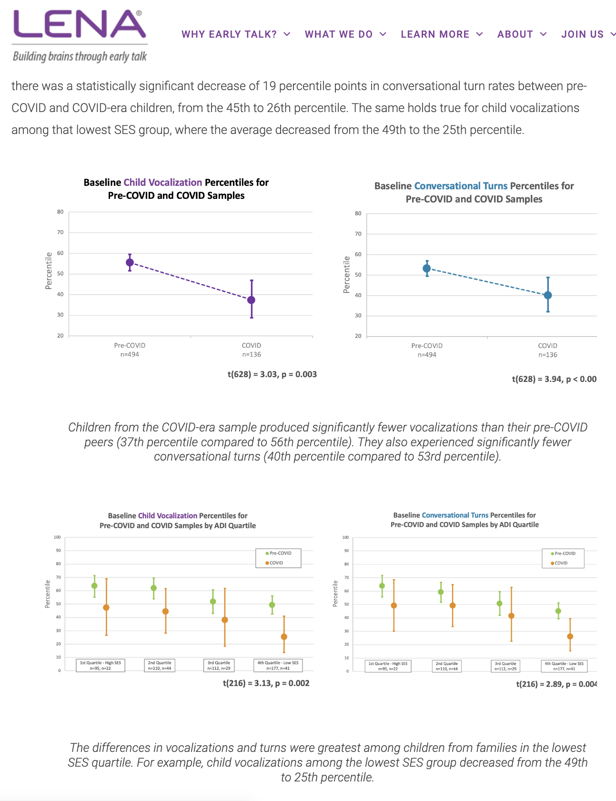
Only the lowest SES group showed statistically discernible differences pre- vs. post-COVID.
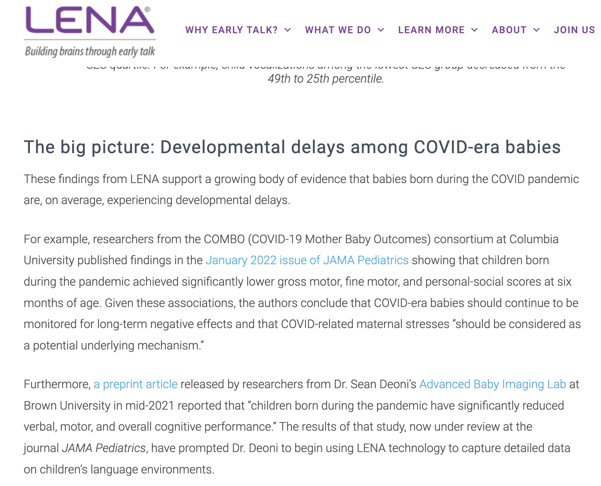
“Growing body of evidence” is just blather. They found two studies, both of which are described as showing significant decreases in the various scores. Let’s look at those two studies (one of which is a pre-print) to see how “significant” they are.
The study didn’t see any difference between the covid-exposed and non-exposed groups. So they switched to comparing against a historical cohort.
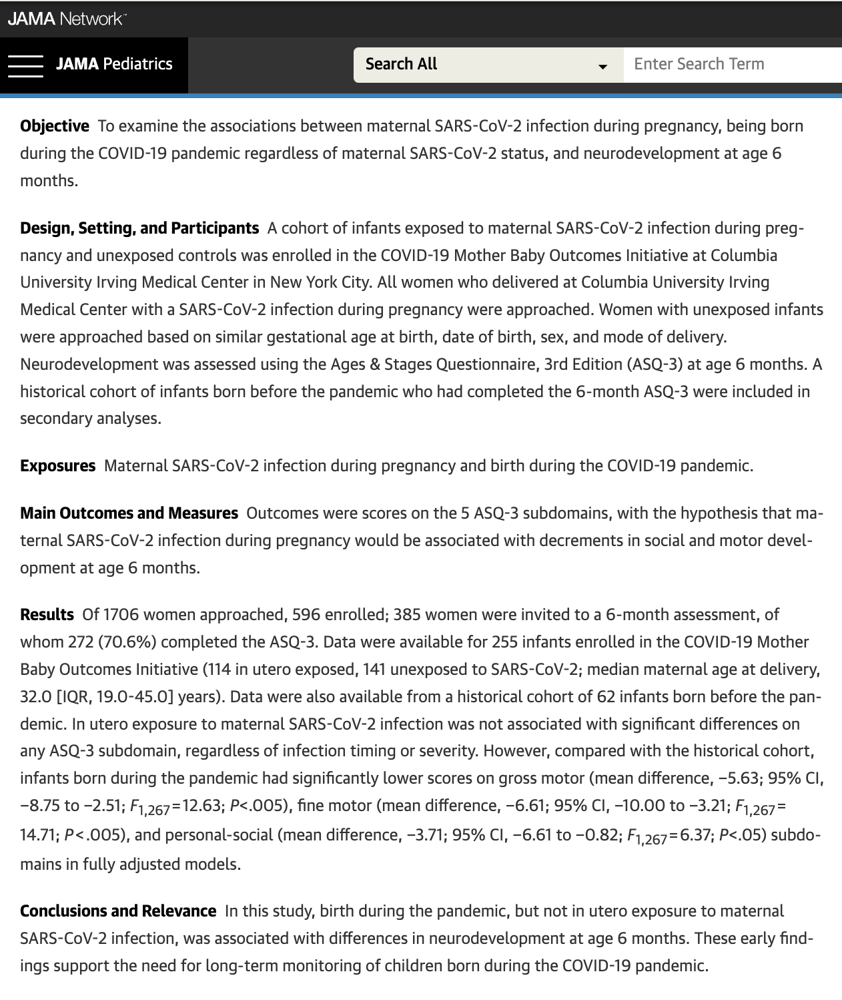
The confidence intervals for the COVID babies touch the average over all the pre-covid years. So lower scores have not been discerned. But close!
The gray horizontal bar through the graphs puts the COVID babies on the edge of something. But that bar is just a decoration with no statistical meaning. (It’s almost as broad as the individual confidence intervals, so it’s not the CI on the average across the years.)
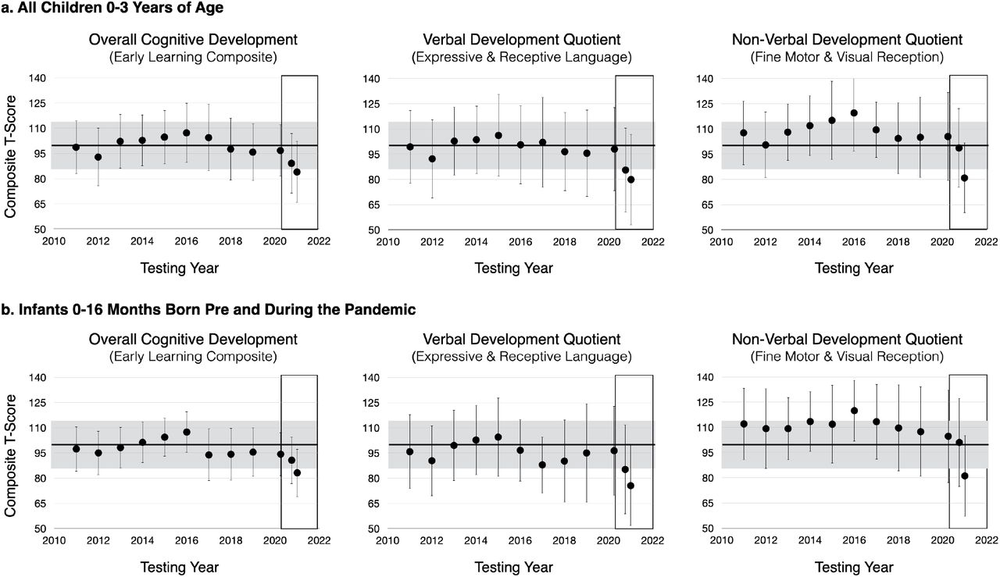
Note that in every panel there are three or four COVID (red) points that are low outliers. The “days of age” indicates that the points are the same babies/measurements in each panel. The score is exactly the same for these babies within each panel. Might this have been a measurement or recording blunder? These points account for the difference in the last bars in Figure 5.
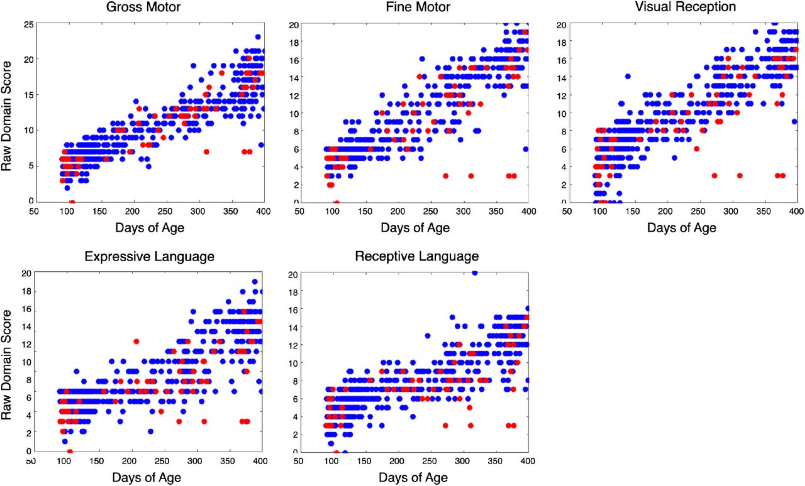
The “red-flag” is based on the association between vocal scores and IQ from the 1992 Hart & Risley paper.
IQ is associated with the same parenting skills that SES is connected to. Are the parenting skills contributing to IQ or is the SES?
Each correlation is a relationship between just two variables, unadjusted for the others in the table or for variables not in the table.
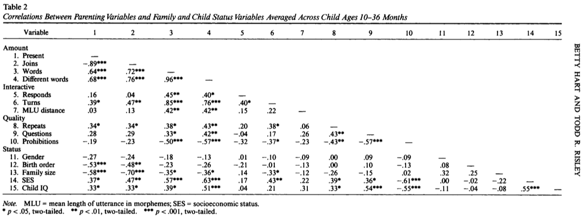
Rindermann & Baumeister (2015) “Parents’ SES vs. parental educational behavior and children’s development: A reanalysis of the Hart and Risley study”, Learning and Individual Differences 37
Abstract: In their seminal study “Meaningful differences in the everyday experience of young American children”, Hart and Risley (1995) showed a close relationship between differences in family environment and children’s development. The conventional conclusion was that children’s cognitive development (measured by psychometric intelligence and verbal ability tests) depends on parental socioeconomic status (SES), especially on wealth. We reanalyzed their data and show that the quality of education given by parents is crucial (βPEB=.58) and not the diffuse aggregate measure of SES (βSES=.11). Additionally, we compare their sample with a similar but larger sample (Hoff, 2003) showing the same pattern of results. Possible causal factors (associated environmental and genetic factors) are discussed. link
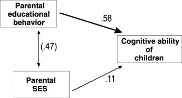
A more detailed DAG:
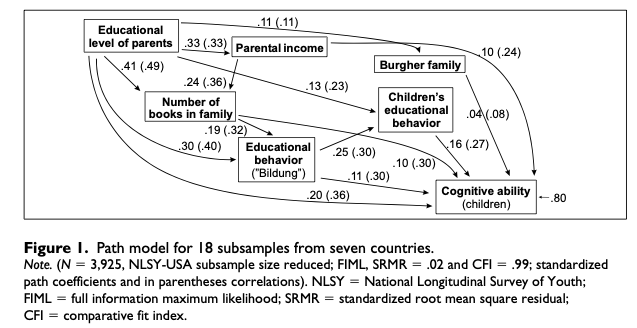
Use confidence intervals whenever the issue is a single coefficient.
Don’t take the word “significant” seriously. To avoid fooling yourself or others, use “discernible.”
“Don’t ever accept.
Nulls, you may only reject …
or fail trying.”
Chance explanation?
The value is too extreme.
That’s significant — Nyaradzo Mvududu